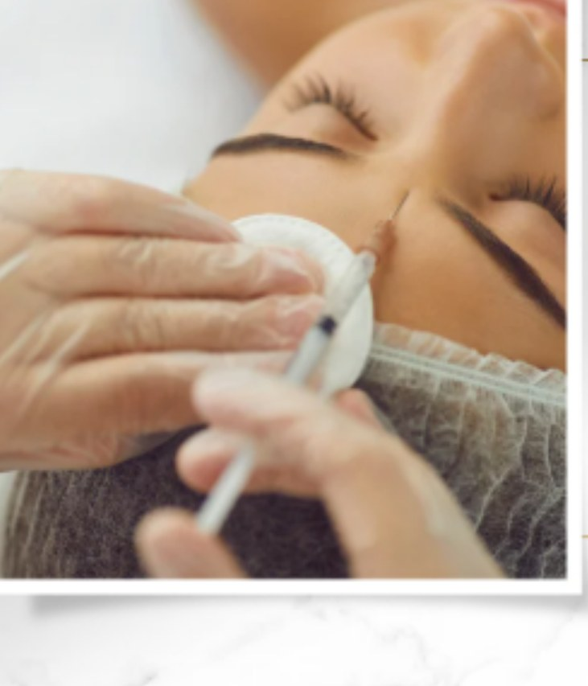
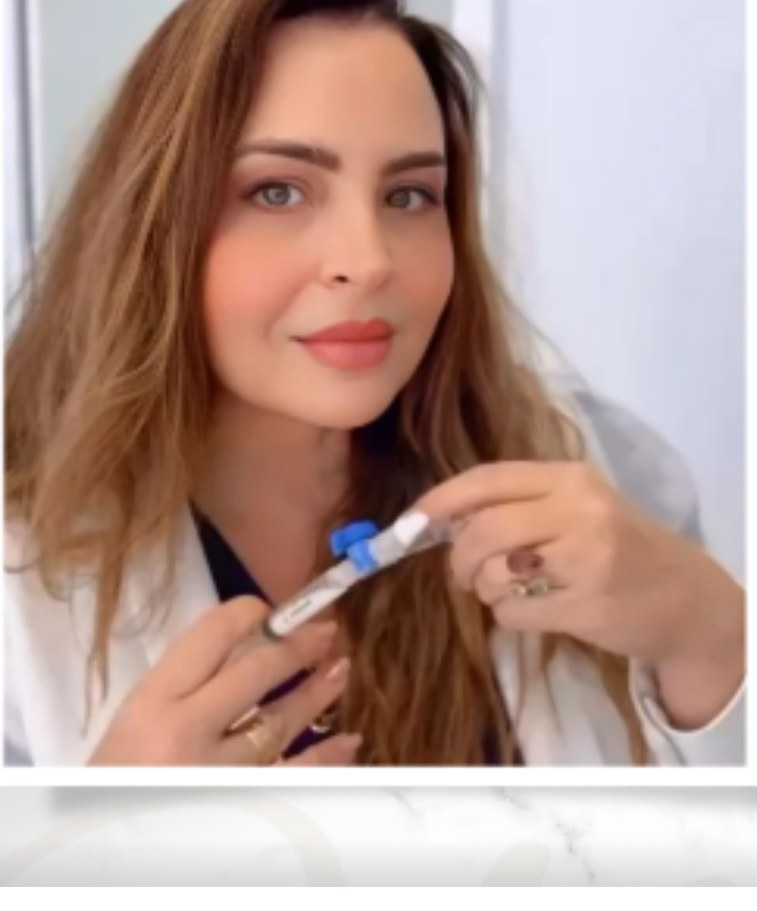
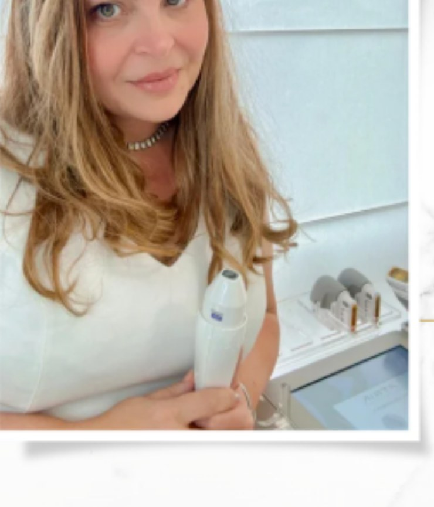
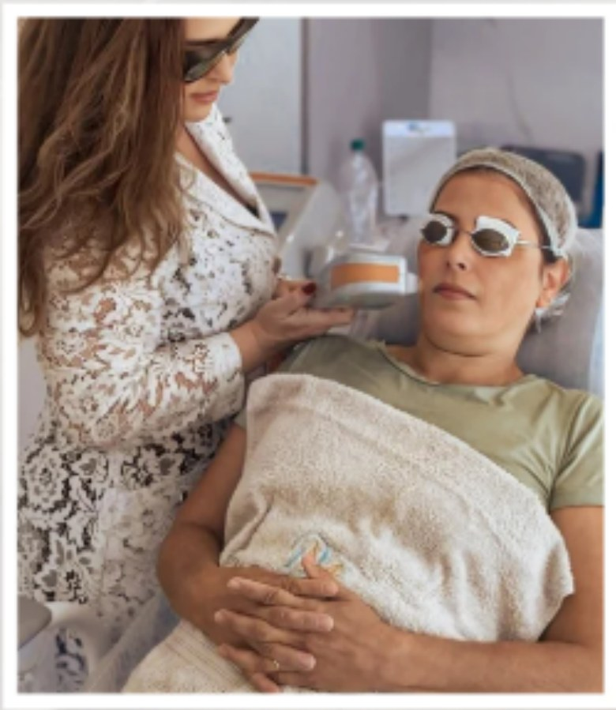
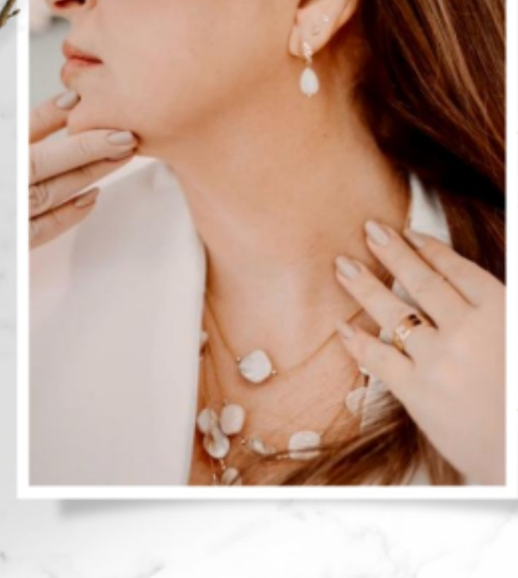
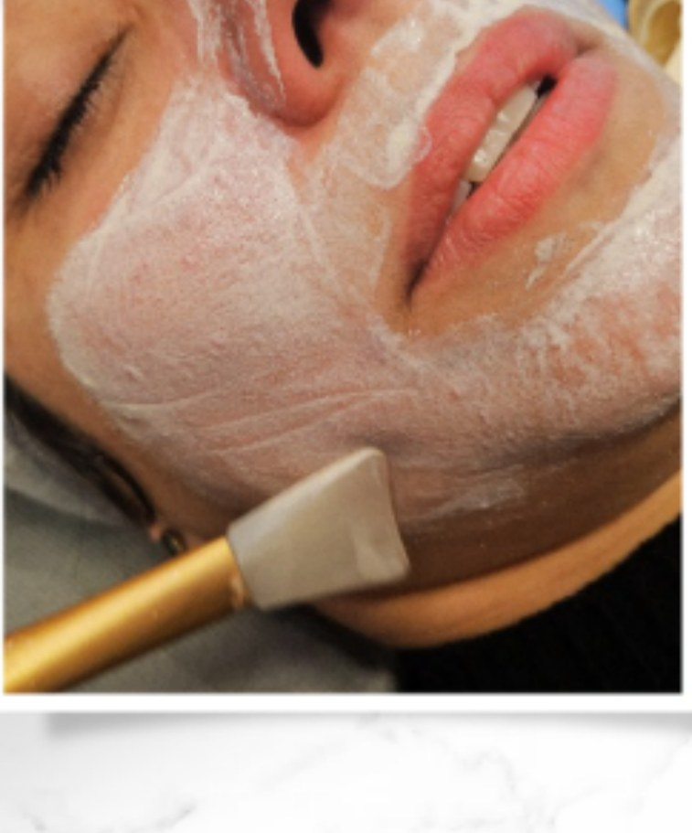
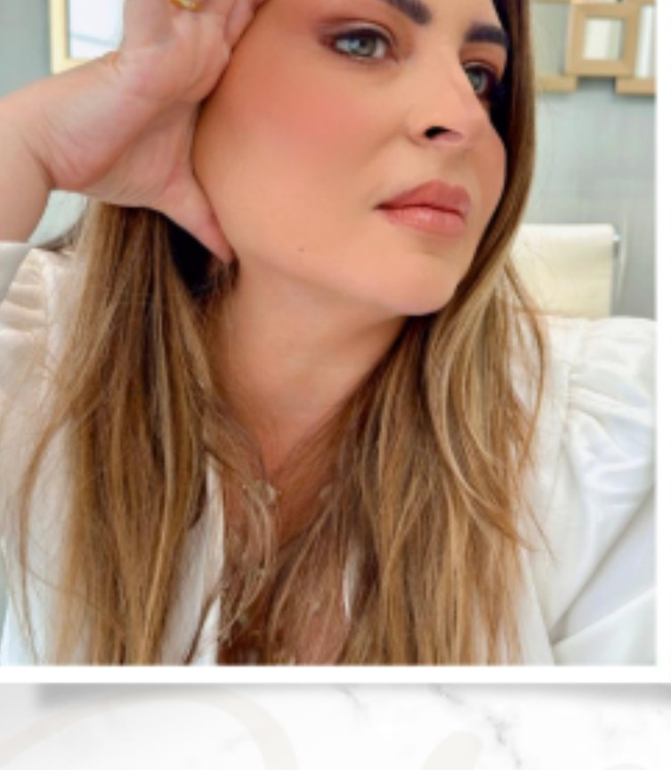

Preenchimento Facial e Corporal
Utilizamos produtos de alta qualidade que garantem resultados mais naturais e duradouros nos preenchimentos faciais e corporais.
Agendar avaliação →Cada procedimento estético começa com uma avaliação individual. Unimos conhecimento médico, precisão técnica e um olhar atento à sua identidade para indicar o cuidado mais adequado para você.

Cada pele e cada rosto têm características únicas. Por isso, antes de qualquer indicação, avaliamos sua história, sua rotina e seus objetivos, para construir uma estratégia de cuidado individual, precisa e natural.

Utilizamos produtos de alta qualidade que garantem resultados mais naturais e duradouros nos preenchimentos faciais e corporais.
Agendar avaliação →Substância segura, injetada com inúmeras funções, principalmente na redução de rugas e linhas de expressão.
Agendar avaliação →
Substâncias biocompatíveis capazes de estimular o corpo a produzir mais colágeno, melhorando firmeza e elasticidade.
Agendar avaliação →
Tecnologia de rejuvenescimento facial e corporal com efeito lifting, redução de gordura localizada e estímulo de colágeno.
Agendar avaliação →
Plataforma que combina laser fracionado ablativo e luz intensa pulsada para rejuvenescimento, manchas, cicatrizes, estrias e mais.
Agendar avaliação →
Associação de tratamentos para rejuvenescer, clarear manchas e combater a flacidez em áreas muitas vezes esquecidas.
Agendar avaliação →
Além dos procedimentos usuais, contamos com tecnologias adicionais como peeling ultrassônico, fotobiomodulação e peeling enzimático.
Agendar avaliação →
Combinação de tecnologias e procedimentos não invasivos que promovem um efeito lifting natural, reduzindo a flacidez sem cirurgia.
Agendar avaliação →Além dos tratamentos em destaque acima, também oferecemos outros cuidados complementares, sempre indicados conforme avaliação individual.
Cada pele tem necessidades diferentes. Agende uma avaliação e descubra o cuidado mais indicado para você.
Agendar avaliação